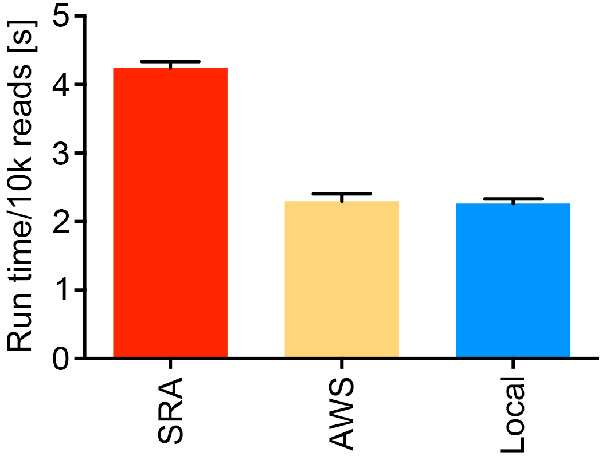

Google Chrome is the recommended browser for use with taxonomer.iobio.io
What is the difference between “Reads Sampled” and “Reads Classified”?
“Reads Samples” is the total number of reads analyzed by Taxonomer. The first step is analysis by Taxonomer’s Binner module, which compares every read to all reference databases in parallel, assigning reads to broad, non-exclusive taxonomic categories.
“Reads Classified” refers to the subset of reads that were analyzed by Taxonomer’s Classifier and Protonomer modules. This includes reads derived from human mRNA, bacterial 16S rRNA, fungal ITS, and all viral/phage sequences.
The complexity introduced by separate “binning” and “classification” results stem from two major sources: (1) not all reads identified as e.g. human or bacterial are used for classification purposes (see below) and (2) a strong sampling bias resulting in overrepresentation of scientifically or medically relevant viral, bacterial, and fungal taxa in reference databases resulting in lower sensitivity for classification of phylogenetically distant taxa. Keeping this in mind, rads sampled are shown below each bine (see example) and reads classified are shown in parentheses. For the ‘Human’ bin, reads sampled refers to all human reads, while reads in parentheses show mRNA-derived reads. With RNA-seq data, rRNA and mitochondrial reads account for most of the difference. For the ‘Bacterial’ bin, reads sampled refers to all bacterial reads while reads classified indicates the subset identified as 16S rRNA-derived. With RNA-seq data, usually >25% of bacterial reads are 16S rRNA-derived and are classified. For the ‘Viral’ bin, reads sampled refers to reads identified by the Binner module based on viral genome reference sequences. Reads classified indicates the number of ‘Viral’ and ‘Unknown’ reads identified to a viral taxon based on Taxonomer’s Protonomer module.
Bin sizes are based on raw read counts and are not normalized to genome sizes. Thus, while they are generally indicative of, they do not necessarily accurately reflect, the biological composition of the sample at the cellular/viral particle level.
How can I compare results between two or more samples?
In its current version, Taxonomer does not provide functionality for comparing results between samples. However, users can either download raw results and perform comparisons in separate analyses (e.g. by using DESeq for transcript expression analyses) or simply open 2 or more windows simultaneously to visually compare results.
How can I ensure rapid analysis if my internet connection has slow upload speeds?
We recommend data storage at AWS S3 (https://aws.amazon.com/s3/) if upload speeds are limited. The test below was performed with the read 1 fastq file from SRR1553464 streamed from the SRA, from AWS, and from an iMac on a University of Utah Ethernet connection with ~900 Mbps upload speed.

Can I analyze 16S amplicon data?
Yes, performance of Taxonomer with 16S amplicon sequencing data is shown in the Taxonomer manuscript in Figure 2e
Why does the Display Threshold disappear after zooming in?
The display threshold can only be adjusted when viewing all results from a given ‘bin’.